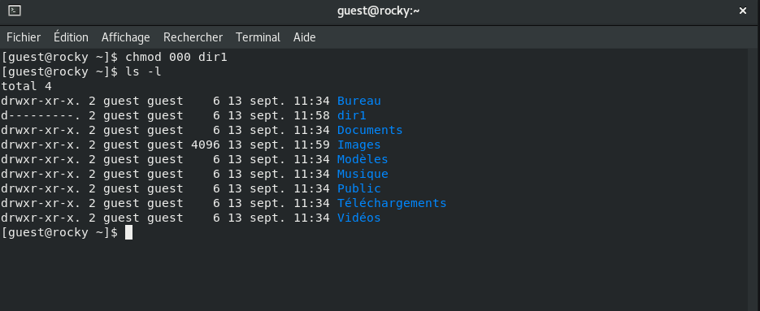

Презентация по лабораторной работе №2
Информационная безопасность
Акондзо Жордани Лади Гаэл.
Российский университет дружбы народов, Москва,
Россия
14 сентября 2024
Докладчик
- Акондзо Жордани Лади Гаэл.
- студент 4-го курса группы НКНбд-01-21
- 1032215649
- Российский университет дружбы народов
- GitHub
Актуальность
- Обеспечение безопасности
- Предотвращение пересечений между пользовательскими аккаунтами
Цели и задачи
- Приобретение практических навыков работы в консоли с атрибутами
файлов
- Закрепление теоретических основ дискреционного разграничения доступа
в современных системах с открытым кодом на базе ОС Linux
Материалы и методы
- Веб-сервис
GitHub для работы с репозиториями
- Программа для виртуализации ОС
VirtualBox
- Процессор
pandoc для входного формата Markdown
- Результирующие форматы
- Автоматизация процесса создания:
Makefile
Создание нового пользователя


Поиск сведений об аккаунте


Просмотр файла /etc/passwd командой
cat /etc/passwd


Создание папки и просмотр прав доступа

Изменение прав доступа

Попытка создания файла

Результаты работы
- Приобретены навыки работы с атрибутами файлов
- Отточены знания об ограничении доступа в системах на базе Linux
- Выявлены минимальные права на директорию и на файл для разных
операций